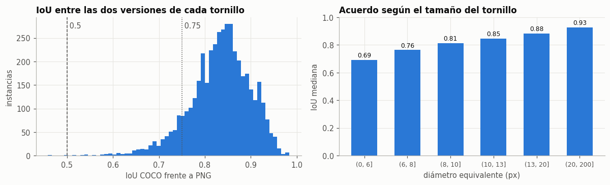
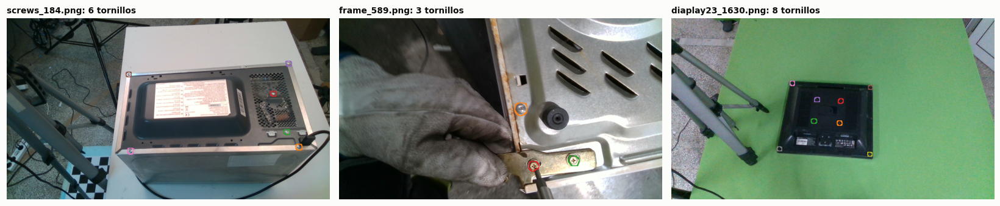
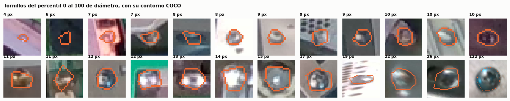
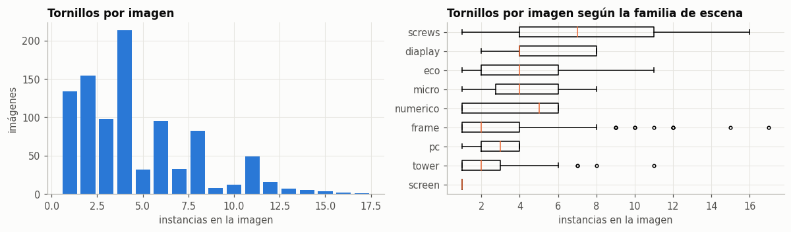
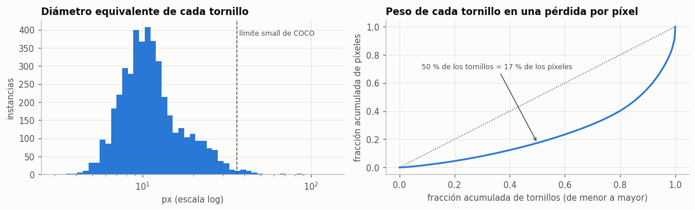
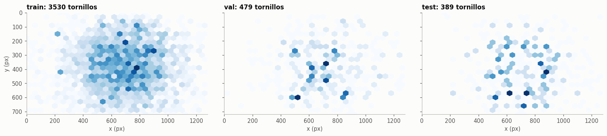
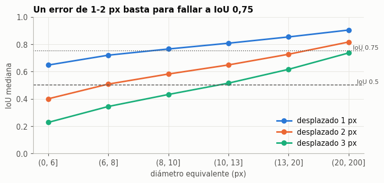
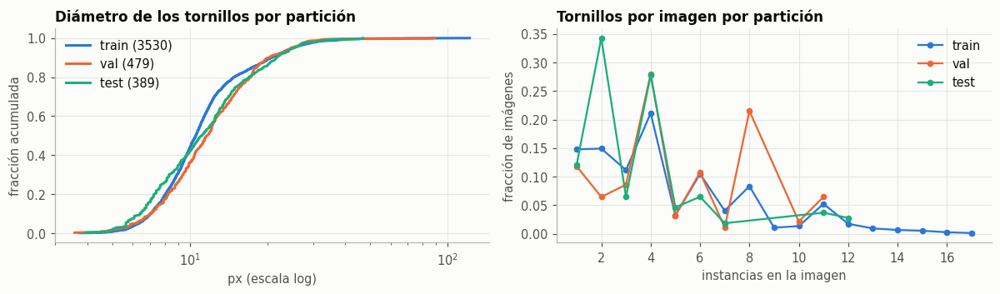

EDA 2 · Tornillos y máscaras#
Autores: Ivan Berrio, Jose David Castillo y Jaime Besada.
El EDA 01 estudia el dataset en conjunto y describe la segmentación semántica: qué píxeles corresponden a tornillos. Este EDA analiza cada tornillo por separado a partir de su anotación COCO. Así podemos revisar cuántos aparecen por imagen, su tamaño y forma, y si cada máscara identifica una pieza distinta.
Esta distinción es útil para robótica porque la aplicación necesita localizar un tornillo concreto para dirigir hacia él el destornillador; una máscara conjunta de tornillos no identifica por sí sola cada objetivo. En las secciones siguientes analizamos las anotaciones, su calidad, la escala y distribución de los tornillos y cómo estos datos condicionan la evaluación.
2.0 Metodología y configuración#
El análisis va de comprobar los datos a entender sus consecuencias para el modelado: primero verificamos cobertura y geometría de las anotaciones; luego describimos el número, tamaño y posición de los tornillos, su separación y la sensibilidad de IoU a pequeños desplazamientos; al final revisamos si las particiones contienen escenas comparables. Así cada medición responde a una pregunta concreta sobre qué se puede aprender y cómo evaluarlo.
El tornillo es la unidad que se segmenta y se describe. Como los tornillos de una imagen y las imágenes de una misma escena comparten condiciones de captura, no son observaciones independientes: la inferencia estadística se hace por grupos de escena.
La siguiente celda carga las herramientas de análisis, fija la semilla, prepara las particiones y el estilo de las figuras, y registra las versiones de los paquetes para poder reproducir el análisis.
# Herramientas básicas y acceso a las funciones del proyecto.
import sys, json, platform, warnings
from pathlib import Path
sys.path.insert(0, '../src') # Permite importar el código del proyecto.
warnings.filterwarnings('ignore') # Evita llenar la salida con advertencias.
# Bibliotecas para tablas, gráficos, imágenes y análisis de máscaras.
import numpy as np, pandas as pd, matplotlib, matplotlib.pyplot as plt
from PIL import Image
from scipy import stats, ndimage as ndi
from skimage import measure
from skimage.segmentation import find_boundaries
from wdsd_e1 import eda as E, instancias as N
# Reproduce operaciones aleatorias y mantiene colores consistentes por partición.
SEED = E.SEED
rng = np.random.default_rng(SEED)
COLOR = {'train': '#2a78d6', 'val': '#eb6834', 'test': '#1baf7a'}
SPLITS = ['train', 'val', 'test']
TINTA, GRIS, ACENTO = '#0b0b0b', '#52514e', '#2a78d6'
# Ajusta el aspecto de gráficos y tablas del notebook.
plt.rcParams.update({'figure.dpi': 110, 'figure.facecolor': '#fcfcfb', 'axes.facecolor': '#fcfcfb',
'axes.spines.top': False, 'axes.spines.right': False, 'axes.edgecolor': '#b5b4ae',
'axes.grid': True, 'grid.color': '#e6e5e0', 'grid.linewidth': .7, 'axes.axisbelow': True,
'text.color': TINTA, 'axes.labelcolor': GRIS, 'xtick.color': GRIS, 'ytick.color': GRIS,
'axes.titlesize': 11, 'axes.titleweight': 'bold', 'axes.titlelocation': 'left',
'font.size': 9.5, 'legend.frameon': False})
pd.set_option('display.width', 180, 'display.max_columns', 30)
# Registra las versiones usadas para facilitar la reproducibilidad.
print('Python', platform.python_version(), '| numpy', np.__version__, '| pandas', pd.__version__, '| matplotlib', matplotlib.__version__)
Python 3.9.25 | numpy 1.25.2 | pandas 2.1.0 | matplotlib 3.7.2
2.1 Definición del problema como segmentación de instancias#
En este trabajo, la segmentación de imágenes se plantea como segmentación de instancias: cada tornillo se representa mediante su propia máscara. Así, además de reconocer los píxeles que corresponden a tornillos, se identifica a cuál tornillo pertenece cada máscara.
Formulación. La entrada es una imagen \(x \in \mathcal{X} = [0,255]^{720 \times 1280 \times 3}\). La salida es un conjunto de máscaras disjuntas, una por tornillo, \(y = \{M_1, \dots, M_K\}\) con \(M_k \subset \Omega = \{1..720\} \times \{1..1280\}\) y \(K\) variable. Se busca \(f: \mathcal{X} \to \mathcal{Y}\) que acierte cuántos tornillos hay y dónde está cada uno. La pérdida que se minimiza depende del modelo implementado. Mask R-CNN combina pérdidas de clasificación, regresión de cajas y entropía cruzada binaria para la máscara, junto con las pérdidas de objetividad y regresión de la red de propuestas. YOLOv8-seg combina pérdidas de caja (CIoU y distribución focal), clasificación y segmentación mediante entropía cruzada binaria. SOLOv2 combina pérdida focal para categorías y pérdida Dice para máscaras, con peso 3 para esta última. La sección 3 detalla las expresiones y las configuraciones empleadas.
Pregunta de investigación. ¿Cuál de los tres modelos base de la literatura localiza mejor cada tornillo en escenas de desmontaje de RAEE con escenas nunca vistas en el entrenamiento, y qué nivel debe superar un modelo avanzado?
Hipótesis operativa. Las diferencias de F1 de instancia por imagen entre los modelos base son mayores que el margen \(\delta\) declarado en la sección 2.13.
Unidad de independencia: el grupo de escena del notebook 01 (186 grupos). La imagen es la unidad de medida de la métrica y el grupo es la unidad de remuestreo para la inferencia.
2.2 Estructura de las anotaciones de instancia#
# Carga el inventario, la partición por escena y las anotaciones COCO.
df = E.inventario()
par = pd.read_csv(E.RESULTS / 'particion.csv')
dec01 = json.load(open(E.RESULTS / 'declaracion_a_priori.json', encoding='utf8'))
coco = E.carga_coco()
# Resume por partición la cobertura y la estructura de las anotaciones.
filas = []
for k in SPLITS:
datos = coco[k]
anotaciones = datos['annotations']
filas.append({'split_oficial': k, 'imagenes': len(datos['images']), 'instancias': len(anotaciones),
'categorias': ', '.join(c['name'] for c in datos['categories']),
'ids_unicos': len({x['id'] for x in anotaciones}) == len(anotaciones),
# iscrowd=1 marca regiones colectivas; se cuentan para comprobar que cada tornillo es individual.
'iscrowd_1': sum(x['iscrowd'] for x in anotaciones),
# Una anotación puede tener varios polígonos que juntos forman una sola instancia.
'con_2_poligonos': sum(len(x['segmentation']) > 1 for x in anotaciones),
# Estas imágenes vacías permitirían medir falsos positivos sin tornillos.
'imagenes_sin_instancia': len({i['id'] for i in datos['images']} - {x['image_id'] for x in anotaciones})})
display(pd.DataFrame(filas).set_index('split_oficial'))
print('Huella del dataset igual a la del EDA 01:', E.huella_dataset(df) == dec01['sha256_dataset'])
# Lista los casos multipolígono con su archivo e ID para poder inspeccionarlos.
archivos_por_id = {k: {im['id']: im['file_name'] for im in datos['images']} for k, datos in coco.items()}
casos_multipoligono = []
for k, datos in coco.items():
for a in datos['annotations']:
if len(a['segmentation']) > 1:
casos_multipoligono.append({'particion': k, 'archivo': archivos_por_id[k][a['image_id']],
'id_anotacion': a['id'], 'numero_poligonos': len(a['segmentation'])})
display(pd.DataFrame(casos_multipoligono))
# Añade a cada tornillo su escena y calcula el diámetro equivalente desde el área anotada.
ins, acu = N.tablas_instancias(df)
ins = ins.merge(par[['archivo', 'split', 'grupo', 'familia']], on='archivo', how='left')
ins['diametro'] = np.sqrt(4 * ins.area_coco / np.pi)
print('Instancias:', len(ins), '| sin partición asignada:', ins.split.isna().sum(),
'| imágenes con instancias:', ins.archivo.nunique(), 'de', len(df))
| imagenes | instancias | categorias | ids_unicos | iscrowd_1 | con_2_poligonos | imagenes_sin_instancia | |
|---|---|---|---|---|---|---|---|
| split_oficial | |||||||
| train | 765 | 3578 | Screw | True | 0 | 2 | 0 |
| val | 90 | 402 | Screw | True | 0 | 0 | 0 |
| test | 90 | 418 | Screw | True | 0 | 0 | 0 |
Huella del dataset igual a la del EDA 01: True
Instancias: 4398 | sin partición asignada: 0 | imágenes con instancias: 945 de 945
Categoría y cobertura#
Las anotaciones incluyen una sola categoría, Screw, y todas las imágenes contienen al menos un tornillo. Por eso este conjunto permite medir si se detectan los tornillos presentes, pero no permite comprobar cuántos falsos positivos produciría el modelo en una imagen sin tornillos.
Una anotación por tornillo#
En COCO, iscrowd = 1 señala una región colectiva que no está separada objeto por objeto. Aquí todas las anotaciones tienen iscrowd = 0, así que cada una puede evaluarse como una instancia individual, que es lo que requiere esta tarea.
Instancias con varios polígonos#
Dos de las 4.398 anotaciones están descritas mediante dos polígonos. Eso no significa que cada una represente dos tornillos: los polígonos se combinan para formar la máscara de una sola anotación. Son estas dos anotaciones del conjunto de entrenamiento:
Imagen |
ID de anotación |
Caja [x, y, ancho, alto] (px) |
|---|---|---|
|
1499 |
[778, 578, 11, 12] |
|
2481 |
[808, 257, 3, 9] |
El código también lista estos archivos e identificadores y rasteriza todos los polígonos de cada anotación como una sola instancia.
Decisión de preprocesamiento. Se usa una sola clase y se trata cada anotación como una instancia, uniendo los dos polígonos de las 2 instancias partidas.
Impacto en la arquitectura. Basta una salida binaria (tornillo o fondo) más la separación en instancias; no hace falta cabeza de clasificación multiclase.
Riesgos. Como no hay imágenes sin tornillos, el conjunto de prueba no mide falsos positivos en escenas vacías. Esto se declara como limitación de validez externa.
2.3 Calidad de las anotaciones de instancia#
Antes de usar COCO como verdad de referencia, comprobamos que sus áreas y cajas concuerden con los polígonos y la comparamos con la máscara PNG del dataset. Si estas representaciones discrepan, el desacuerdo podría confundirse con un error del modelo; por eso medimos su consistencia y revisamos algunos casos visualmente.
# Contrasta el área declarada con la que se obtiene al rasterizar los polígonos COCO.
print('Píxeles rasterizados por centros de píxel igual a area COCO:', (ins.px == ins.area_coco).mean())
# Compara los límites de las cajas con los límites rasterizados de cada polígono.
desf = pd.DataFrame({'x0': ins.x - ins.px_x0, 'y0': ins.y - ins.px_y0,
'x1': ins.x + ins.w - ins.px_x1, 'y1': ins.y + ins.h - ins.px_y1})
print('Desfase caja - polígono (valor más frecuente por lado):', desf.round(1).mode().iloc[0].to_dict())
# Muestra cualquier caja que no siga la convención observada en el conjunto.
raras = ins.loc[(desf.round(1) != 0.5).any(axis=1), ['archivo', 'split_oficial', 'id', 'w', 'h', 'px_x0', 'px_x1', 'px_y0', 'px_y1']]
print('Cajas que no envuelven su polígono:', len(raras)); display(raras)
# Mide cuánto coincide cada máscara COCO con su componente en la máscara PNG.
print('\nIoU por instancia COCO frente a su componente PNG:')
display(ins.iou_png.describe(percentiles=[.01, .05, .5, .95]).round(3).to_frame().T)
print('Instancias que comparten componente PNG con otra:', (ins.instancias_en_componente > 1).sum(),
'| componentes PNG sin instancia COCO:', int((acu.n_comp_png - acu.n_coco).clip(lower=0).sum()))
# Resume el acuerdo de anotaciones para los umbrales de IoU considerados.
techo = pd.DataFrame({u: {'F1 medio por imagen': acu[f'f1_{u}'].mean(), 'imagenes con F1 < 1': (acu[f'f1_{u}'] < 1).mean(),
'SQ medio': acu[f'sq_{u}'].mean(), 'PQ medio': acu[f'pq_{u}'].mean()} for u in N.UMBRALES})
techo.columns = [f'IoU >= {u}' for u in N.UMBRALES]
print('\nAcuerdo entre las dos versiones de la anotación (COCO como verdad, PNG como predicción):'); display(techo.round(4))
Píxeles rasterizados por centros de píxel igual a area COCO: 1.0
Desfase caja - polígono (valor más frecuente por lado): {'x0': 0.5, 'y0': 0.5, 'x1': 0.5, 'y1': 0.5}
Cajas que no envuelven su polígono: 0
| archivo | split_oficial | id | w | h | px_x0 | px_x1 | px_y0 | px_y1 |
|---|
IoU por instancia COCO frente a su componente PNG:
| count | mean | std | min | 1% | 5% | 50% | 95% | max | |
|---|---|---|---|---|---|---|---|---|---|
| iou_png | 4398.0 | 0.833 | 0.065 | 0.458 | 0.649 | 0.717 | 0.839 | 0.929 | 0.984 |
Instancias que comparten componente PNG con otra: 0 | componentes PNG sin instancia COCO: 4
Acuerdo entre las dos versiones de la anotación (COCO como verdad, PNG como predicción):
| IoU >= 0.5 | IoU >= 0.75 | |
|---|---|---|
| F1 medio por imagen | 0.9995 | 0.9063 |
| imagenes con F1 < 1 | 0.0053 | 0.2582 |
| SQ medio | 0.8423 | 0.8408 |
| PQ medio | 0.8419 | 0.7765 |
# Muestra la distribución del acuerdo y cómo cambia con el tamaño de los tornillos.
fig, ax = plt.subplots(1, 2, figsize=(11, 3.4))
ax[0].hist(ins.iou_png, bins=60, color=ACENTO)
for u, ls in zip(N.UMBRALES, ['--', ':']):
ax[0].axvline(u, color=GRIS, ls=ls, lw=1); ax[0].text(u, ax[0].get_ylim()[1] * .92, f' {u}', color=GRIS)
ax[0].set(title='IoU entre las dos versiones de cada tornillo', xlabel='IoU COCO frente a PNG', ylabel='instancias')
# Resume la IoU por rangos de diámetro equivalente.
b = ins.assign(rango=pd.cut(ins.diametro, [0, 6, 8, 10, 13, 20, 200])).groupby('rango', observed=True).iou_png
ax[1].bar(range(len(b.median())), b.median(), color=ACENTO, width=.6)
ax[1].set_xticks(range(len(b.median()))); ax[1].set_xticklabels([str(i) for i in b.median().index], rotation=0, fontsize=8)
ax[1].set(title='Acuerdo según el tamaño del tornillo', xlabel='diámetro equivalente (px)', ylabel='IoU mediana', ylim=(0, 1))
for i, v in enumerate(b.median()): ax[1].text(i, v + .02, f'{v:.2f}', ha='center', fontsize=8)
plt.tight_layout(); plt.show()

La rasterización por centros de píxel reproduce exactamente el área COCO. Las cajas siguen una convención consistente: quedan medio píxel por fuera del polígono. En cambio, la máscara PNG no es una copia exacta de COCO: ocupa aproximadamente un 16 % más y la IoU mediana entre ambas representaciones es 0,84.
Aun así, el acuerdo es casi perfecto con IoU ≥ 0,5 (F1 = 0,9995), mientras que con IoU ≥ 0,75 baja a 0,91 y una parte de los tornillos pequeños deja de contar como acierto. Esto muestra que el umbral afecta la evaluación incluso antes de entrenar un modelo. Como COCO y PNG no son anotaciones independientes, esta comparación solo da una referencia optimista del ruido de etiquetado.
Por consistencia, COCO rasterizado por centros de píxel será la verdad de referencia; las máscaras PNG se mantienen solo para esta comparación. Usaremos el campo bbox tal como está y el umbral IoU ≥ 0,5 para el F1 primario. AP de máscara entre 0,5 y 0,95 y F1 a 0,75 se reportan como información adicional, porque los tornillos pequeños y el desacuerdo de bordes pueden penalizarlos más.
Para complementar las medidas, superponemos los contornos COCO sobre escenas de distintas familias y revisamos recortes de tornillos pequeños a grandes. Esto permite detectar desalineaciones o errores visibles que una tabla de métricas no muestra.
# Organiza las anotaciones por imagen y prepara rutas para superponerlas.
por_img = N._por_archivo(coco)
rutas = dict(zip(df.archivo, df.ruta_img))
fams = ['screws', 'frame', 'diaplay']
# Elige una escena de cada familia para revisar máscaras de distintos contextos.
ejemplos = [par[par.familia == f].archivo.sample(1, random_state=SEED).iloc[0] for f in fams]
fig, ax = plt.subplots(1, 3, figsize=(15, 3.3))
cmap = plt.get_cmap('tab20')
# Dibuja las instancias COCO sobre la imagen sin alterar los píxeles originales.
for a, arch in zip(ax, ejemplos):
im = np.asarray(Image.open(rutas[arch]).convert('RGB')).copy()
lab = N.etiqueta_coco(por_img[arch])
anillo = ndi.grey_dilation(lab, size=13)
borde = (anillo > 0) & ~ndi.binary_dilation(lab > 0, iterations=3)
col = (np.array([cmap((2 * i) % 20)[:3] for i in range(lab.max() + 1)]) * 255).astype(np.uint8)
im[borde] = col[anillo[borde]]
a.imshow(im); a.set_title(f'{arch}: {lab.max()} tornillos', fontsize=9); a.axis('off'); a.grid(False)
plt.tight_layout(); plt.show()
# Selecciona tornillos a lo largo de todo el rango de tamaños para revisar sus bordes.
q = ins.sort_values('diametro').iloc[np.linspace(0, len(ins) - 1, 24).astype(int)]
fig, ax = plt.subplots(2, 12, figsize=(15, 3))
# Recorta cada tornillo y resalta su contorno COCO.
for a, f in zip(ax.ravel(), q.itertuples()):
im = np.asarray(Image.open(rutas[f.archivo]).convert('RGB'))
lado = int(max(24, 1.6 * max(f.w, f.h))); cx, cy = int(f.cx), int(f.cy)
y0, x0 = max(cy - lado // 2, 0), max(cx - lado // 2, 0)
rec = im[y0:y0 + lado, x0:x0 + lado]
lab = N.etiqueta_coco([a_ for a_ in por_img[f.archivo] if a_['id'] == f.id])[y0:y0 + lado, x0:x0 + lado]
rec = rec.copy(); rec[find_boundaries(lab, mode='outer')] = (235, 104, 52)
a.imshow(rec, interpolation='nearest'); a.set_title(f'{f.diametro:.0f} px', fontsize=8); a.axis('off'); a.grid(False)
fig.suptitle('Tornillos del percentil 0 al 100 de diámetro, con su contorno COCO', x=.01, ha='left', fontsize=10, fontweight='bold')
plt.tight_layout(h_pad=1.2); plt.show()


Los contornos rodean las cabezas de los tornillos, aunque son aproximados: los polígonos tienen pocos vértices y siguen peor el borde de los tornillos pequeños. Por debajo de unos 8 px de diámetro, la cabeza ocupa tan pocos píxeles que su frontera exacta se vuelve ambigua; esto concuerda con el menor acuerdo de anotaciones observado arriba.
Por eso conservamos los polígonos COCO sin suavizarlos ni dilatarlos y mantenemos la resolución nativa en las primeras capas del modelo. Esta revisión comprueba las anotaciones disponibles, pero no audita si todos los tornillos visibles tienen etiqueta. Es posible que algunos objetos visibles provengan de imágenes o fuentes distintas de las etiquetas COCO, pero no se ha verificado que esto ocurra en WDSD. El benchmark evalúa las instancias que sí tienen etiqueta; por ello, esos objetos quedan fuera del objetivo definido. Si un tornillo real sin etiqueta aparece en una imagen evaluada y el modelo lo detecta, podría contarse como falso positivo. Esto no invalida la evaluación de los tornillos anotados, aunque limita la interpretación de esos falsos positivos.
2.4 La variable objetivo: número de instancias por imagen#
n_img = ins.groupby('archivo').size().reindex(par.archivo, fill_value=0)
pi = par.assign(n=n_img.values)
r = pi.n.describe()
print(f'Instancias por imagen: media {r["mean"]:.2f}, mediana {r["50%"]:.0f}, mínimo {r["min"]:.0f}, máximo {r["max"]:.0f}')
print(f'Índice de dispersión (varianza / media): {pi.n.var() / pi.n.mean():.2f} (1 en un proceso de Poisson)')
print(f'Asimetría {stats.skew(pi.n):.2f} | curtosis en exceso {stats.kurtosis(pi.n):.2f}')
tab = pi.groupby('familia').n.agg(imagenes='size', instancias='sum', media='mean', mediana='median', maximo='max')
tab['pct_instancias'] = 100 * tab.instancias / tab.instancias.sum()
display(tab.sort_values('instancias', ascending=False).round(2))
fondo = 1 - ins.area_coco.sum() / (len(df) * E.H * E.W)
print(f'Fracción de fondo con la verdad COCO: {100 * fondo:.3f} % (razón fondo:tornillo {fondo / (1 - fondo):,.0f}:1)')
fig, ax = plt.subplots(1, 2, figsize=(11, 3.3))
ax[0].bar(*np.unique(pi.n, return_counts=True), color=ACENTO, width=.8)
ax[0].set(title='Tornillos por imagen', xlabel='instancias en la imagen', ylabel='imágenes')
o = tab.sort_values('media').index
ax[1].boxplot([pi.n[pi.familia == f] for f in o], vert=False, labels=o, widths=.5,
medianprops={'color': '#eb6834'}, flierprops={'markersize': 3})
ax[1].set(title='Tornillos por imagen según la familia de escena', xlabel='instancias en la imagen')
plt.tight_layout(); plt.show()
Instancias por imagen: media 4.65, mediana 4, mínimo 1, máximo 17
Índice de dispersión (varianza / media): 2.19 (1 en un proceso de Poisson)
Asimetría 1.06 | curtosis en exceso 0.66
| imagenes | instancias | media | mediana | maximo | pct_instancias | |
|---|---|---|---|---|---|---|
| familia | ||||||
| screws | 202 | 1478 | 7.32 | 7.0 | 16 | 33.61 |
| diaplay | 109 | 622 | 5.71 | 4.0 | 8 | 14.14 |
| eco | 136 | 595 | 4.38 | 4.0 | 11 | 13.53 |
| frame | 158 | 552 | 3.49 | 2.0 | 17 | 12.55 |
| pc | 156 | 484 | 3.10 | 3.0 | 4 | 11.01 |
| micro | 100 | 407 | 4.07 | 4.0 | 8 | 9.25 |
| tower | 53 | 141 | 2.66 | 2.0 | 11 | 3.21 |
| numerico | 30 | 118 | 3.93 | 5.0 | 6 | 2.68 |
| screen | 1 | 1 | 1.00 | 1.0 | 1 | 0.02 |
Fracción de fondo con la verdad COCO: 99.919 % (razón fondo:tornillo 1,228:1)

La imagen típica tiene 4 tornillos y ninguna pasa de 17. La sobredispersión es moderada y viene sobre todo de la familia screws, que concentra un tercio de las instancias con imágenes de hasta 16 tornillos. La familia pc nunca pasa de 4.
El desbalance a nivel de píxel es extremo (fondo del orden del 99,9 %), pero a nivel de instancia no hay clases que equilibrar: la dificultad es encontrar todos los objetos, no distinguir entre ellos.
No se iguala el número de tornillos por imagen mediante sobremuestreo o submuestreo. La evaluación promedia el desempeño por imagen y busca generalizar a escenas nuevas; dar más peso a imágenes densas cambiaría ese objetivo y haría que unas pocas escenas influyeran más. Además, los tornillos de una misma escena no son independientes. Para estudiar la variabilidad se remuestrean grupos completos, no tornillos sueltos.
El desbalance de píxeles es otra cuestión: hay mucho más fondo que tornillo. Se atiende con una función de pérdida adecuada; no es una razón para alterar por cantidad de instancias la composición de las particiones.
2.5 Tamaño y forma de las instancias#
d = ins.diametro
print('Diámetro equivalente (px):', d.describe(percentiles=[.01, .05, .25, .5, .75, .95, .99]).round(1).to_dict())
clases = pd.cut(ins.area_coco, [0, 32**2, 96**2, np.inf], labels=['small', 'medium', 'large'], right=False)
print('Clases de tamaño COCO (%):', (100 * clases.value_counts(normalize=True)).round(2).to_dict())
print(f'Instancias con área < 8x8 px: {100 * (ins.area_coco < 64).mean():.1f} % < 16x16 px: {100 * (ins.area_coco < 256).mean():.1f} %')
llen = ins.area_coco / ((ins.px_x1 - ins.px_x0) * (ins.px_y1 - ins.px_y0))
asp = (ins.px_x1 - ins.px_x0) / (ins.px_y1 - ins.px_y0)
print(f'Relleno de la caja: mediana {llen.median():.2f} (pi/4 = {np.pi/4:.2f} para un círculo) | aspecto: p1 {asp.quantile(.01):.2f}, p99 {asp.quantile(.99):.2f}')
H, p = stats.kruskal(*[g.diametro for _, g in ins.groupby('familia') if len(g) > 5])
print(f'Kruskal-Wallis del diámetro entre familias: H = {H:.1f}, p = {p:.2e} (instancias no independientes: es descriptivo)')
display(ins.groupby('familia').diametro.agg(['size', 'median', lambda s: s.quantile(.9)]).rename(columns={'<lambda_0>': 'p90'}).sort_values('median').round(1))
o = np.sort(ins.area_coco.to_numpy())
cum_px = np.cumsum(o) / o.sum()
mitad = np.searchsorted(np.arange(1, len(o) + 1) / len(o), .5)
print(f'La mitad más pequeña de los tornillos aporta el {100 * cum_px[mitad]:.1f} % de los píxeles de tornillo.')
fig, ax = plt.subplots(1, 2, figsize=(11, 3.4))
ax[0].hist(d, bins=np.logspace(np.log10(3), np.log10(130), 50), color=ACENTO)
ax[0].set_xscale('log'); ax[0].axvline(np.sqrt(4 * 32**2 / np.pi), color=GRIS, ls='--', lw=1)
ax[0].text(np.sqrt(4 * 32**2 / np.pi), ax[0].get_ylim()[1] * .9, ' límite small de COCO', color=GRIS, fontsize=8)
ax[0].set(title='Diámetro equivalente de cada tornillo', xlabel='px (escala log)', ylabel='instancias')
ax[1].plot(np.arange(1, len(o) + 1) / len(o), cum_px, color=ACENTO, lw=2)
ax[1].plot([0, 1], [0, 1], color=GRIS, lw=1, ls=':')
ax[1].set(title='Peso de cada tornillo en una pérdida por píxel', xlabel='fracción acumulada de tornillos (de menor a mayor)',
ylabel='fracción acumulada de píxeles')
ax[1].annotate(f'50 % de los tornillos = {100 * cum_px[mitad]:.0f} % de los píxeles', (.5, cum_px[mitad]), (.08, .7),
arrowprops={'arrowstyle': '->', 'color': GRIS}, fontsize=8, color=GRIS)
plt.tight_layout(); plt.show()
Diámetro equivalente (px): {'count': 4398.0, 'mean': 12.5, 'std': 7.0, 'min': 3.6, '1%': 5.0, '5%': 6.3, '25%': 8.5, '50%': 10.6, '75%': 13.9, '95%': 25.2, '99%': 37.3, 'max': 121.8}
Clases de tamaño COCO (%): {'small': 98.84, 'medium': 1.14, 'large': 0.02}
Instancias con área < 8x8 px: 30.5 % < 16x16 px: 85.4 %
Relleno de la caja: mediana 0.76 (pi/4 = 0.79 para un círculo) | aspecto: p1 0.62, p99 2.00
Kruskal-Wallis del diámetro entre familias: H = 2030.2, p = 0.00e+00 (instancias no independientes: es descriptivo)
| size | median | p90 | |
|---|---|---|---|
| familia | |||
| diaplay | 622 | 7.4 | 10.2 |
| pc | 484 | 10.0 | 13.4 |
| screws | 1478 | 10.0 | 15.5 |
| eco | 595 | 10.2 | 12.7 |
| numerico | 118 | 12.1 | 15.6 |
| frame | 552 | 17.8 | 29.4 |
| tower | 141 | 18.4 | 27.0 |
| micro | 407 | 18.5 | 25.9 |
| screen | 1 | 19.5 | 19.5 |
La mitad más pequeña de los tornillos aporta el 17.4 % de los píxeles de tornillo.

El 98,8 % de las instancias son small en la convención COCO (menos de 32×32 px) y la mediana del diámetro es unos 11 px. Son objetos compactos y casi circulares: el relleno de la caja ronda \(\pi/4\) y el aspecto se mantiene entre 0,6 y 2.
El tamaño depende de la familia: diaplay tiene los tornillos más pequeños (mediana de 7 px) y frame, tower y micro los mayores (unos 18 px). La consecuencia más importante está a la derecha: en una pérdida por píxel, la mitad más pequeña de los tornillos pesa muy poco, aunque en el F1 de instancia cada tornillo cuenta lo mismo.
Decisión de preprocesamiento. Sin reescalado hacia abajo (sección 2.9). Augmentations de escala limitadas a ±20 %, para no llevar los tornillos pequeños por debajo de unos 5 px.
Impacto en la arquitectura. La pérdida debe dar a cada instancia un peso parecido: Dice por instancia, ponderación por píxel inversa al área del tornillo o focal. En detectores tipo Mask R-CNN (Entregable 2) haría falta un nivel de paso 4 (P2) y anclas de 8 a 32 px; con paso 8, la mediana del tornillo ocupa poco más de una celda.
Riesgos. Con una pérdida por píxel sin ponderar, el modelo puede alcanzar buen Dice de píxel y perder la mayoría de los tornillos pequeños. Por eso el Dice de píxel no sirve como métrica primaria en este planteamiento.
2.6 Separación de los tornillos en las máscaras#
Una máscara binaria marca todos los píxeles de tornillo, pero no indica por sí sola cuántos tornillos hay. El etiquetado de componentes conexas puede recuperar cada instancia si las máscaras de tornillos distintos permanecen separadas. Comprobamos primero que los objetos no se toquen y luego simulamos errores de borde que engrosan las máscaras para ver cuándo se fusionarían.
# Comprueba si las anotaciones COCO se solapan y si las máscaras PNG ya mezclan tornillos.
print('Solapes entre polígonos de una misma imagen: ninguno (máscara de etiquetas sin conflictos).')
print('Instancias cuya componente PNG contiene a otra instancia:', int((ins.instancias_en_componente > 1).sum()))
# La distancia al tornillo vecino más cercano indica cuánto espacio hay entre instancias.
print('Distancia entre centros al vecino más cercano (px):', ins.dist_vecino.describe(percentiles=[.01, .05, .5]).round(1).to_dict())
# Engrosa cada máscara en varios radios y cuenta cuántos tornillos se unirían.
radios = [0, 1, 2, 3, 5, 8]
perdidas = {r: 0 for r in radios}
imgs_fus = {r: 0 for r in radios}
for arch, anns in por_img.items():
b = N.etiqueta_coco(anns) > 0
for r in radios:
m = ndi.binary_dilation(b, np.ones((3, 3)), iterations=r) if r else b
n = measure.label(m, connectivity=2).max()
perdidas[r] += len(anns) - n
imgs_fus[r] += n < len(anns)
# Resume las fusiones y su alcance en imágenes.
dil = pd.DataFrame({'instancias fusionadas': perdidas, '% de instancias': {r: 100 * perdidas[r] / len(ins) for r in radios},
'imagenes afectadas': imgs_fus})
dil.index.name = 'dilatación (px)'
display(dil.round(2))
print('Área mínima de un tornillo:', ins.area_coco.min(), 'px | percentil 1:', ins.area_coco.quantile(.01), 'px')
Solapes entre polígonos de una misma imagen: ninguno (máscara de etiquetas sin conflictos).
Instancias cuya componente PNG contiene a otra instancia: 0
Distancia entre centros al vecino más cercano (px): {'count': 4264.0, 'mean': 138.1, 'std': 105.6, 'min': 14.1, '1%': 37.4, '5%': 47.3, '50%': 103.0, 'max': 1017.6}
| instancias fusionadas | % de instancias | imagenes afectadas | |
|---|---|---|---|
| dilatación (px) | |||
| 0 | 0 | 0.00 | 0 |
| 1 | 0 | 0.00 | 0 |
| 2 | 1 | 0.02 | 1 |
| 3 | 1 | 0.02 | 1 |
| 5 | 4 | 0.09 | 4 |
| 8 | 11 | 0.25 | 10 |
Área mínima de un tornillo: 10 px | percentil 1: 20.0 px
Ningún par de tornillos se toca ni se solapa, y cada instancia COCO corresponde a una sola componente del PNG. Con la verdad de referencia, las componentes conexas recuperan exactamente las instancias.
La tabla simula un modelo que engorda todas las máscaras unos píxeles. Con 3 px de dilatación se fusiona un solo par de tornillos, y con 8 px solo 11 de 4.398 (0,25 %). El etiquetado por componentes es robusto a errores de borde mucho mayores que los esperables.
Las anotaciones no se tocan ni se solapan, y las componentes de referencia recuperan las instancias. Incluso al engrosar artificialmente los bordes, pocas máscaras llegan a fusionarse. Esto respalda el uso de componentes conexas para separar instancias en una salida binaria. En las predicciones, el umbral y el área mínima se ajustan con validación; si una predicción se fragmenta, puede producir falsos positivos y habrá que revisarlo en los modelos.
2.7 Posición de las instancias en la imagen#
fig, ax = plt.subplots(1, 3, figsize=(15, 3), sharey=True)
for a, k in zip(ax, SPLITS):
s = ins[ins.split == k]
a.hexbin(s.cx, s.cy, gridsize=(32, 12), extent=(0, E.W, 0, E.H), cmap='Blues', mincnt=1, linewidths=.2)
a.set(xlim=(0, E.W), ylim=(E.H, 0), title=f'{k}: {len(s)} tornillos', xlabel='x (px)'); a.set_aspect('equal'); a.grid(False)
ax[0].set_ylabel('y (px)')
plt.tight_layout(); plt.show()
borde = (ins.px_x0 <= 1) | (ins.px_y0 <= 1) | (ins.px_x1 >= E.W - 1) | (ins.px_y1 >= E.H - 1)
print('Instancias que tocan el borde de la imagen:', int(borde.sum()))
for k in SPLITS:
s = ins[ins.split == k]
print(f'{k}: centro medio ({s.cx.mean():.0f}, {s.cy.mean():.0f}) px, desviación ({s.cx.std():.0f}, {s.cy.std():.0f})')

Instancias que tocan el borde de la imagen: 0
train: centro medio (691, 371) px, desviación (222, 163)
val: centro medio (705, 391) px, desviación (222, 160)
test: centro medio (732, 404) px, desviación (220, 169)
Los tornillos ocupan casi toda la imagen, con más densidad en la franja central, y ninguno toca el borde. La posición viene de cómo se colocó el aparato frente a la cámara en cada escena, así que las diferencias entre particiones reflejan escenas distintas, no un sesgo de anotación.
Decisión de preprocesamiento. Volteos horizontales y verticales y rotaciones de 90° son admisibles: un tornillo no tiene orientación preferente y las escenas cambian de encuadre. No se necesita padding especial en los bordes.
Impacto en la arquitectura. No hace falta codificar la posición: las arquitecturas convolucionales invariantes a la traslación son adecuadas.
Riesgos. Si el modelo aprende la posición típica de los tornillos de cada escena, test (con escenas nuevas) lo penalizará. Esto es deseable: mide la generalización a escenas no vistas.
2.8 Sensibilidad de IoU ante pequeños desplazamientos#
El F1 cuenta una pareja como acierto solo si la IoU de sus máscaras supera el umbral elegido. En este dataset el diámetro mediano de un tornillo es de unos 11 px, así que desplazar una máscara uno o dos píxeles puede reducir mucho su solapamiento y convertir una localización cercana en un falso negativo. Esta sensibilidad importa porque el umbral define qué entiende el benchmark por “localizar correctamente”; medimos el efecto de desplazar cada máscara 1, 2 y 3 px antes de fijarlo.
# Agrupa tornillos por tamaño y resume cuánto cae la IoU al desplazar cada máscara.
rango = pd.cut(ins.diametro, [0, 6, 8, 10, 13, 20, 200])
sens = ins.groupby(rango, observed=True)[['iou_auto1', 'iou_auto2', 'iou_auto3']].median()
sens.columns = ['1 px', '2 px', '3 px']; sens.index.name = 'diámetro (px)'
print('IoU mediana de un tornillo consigo mismo desplazado:'); display(sens.round(3))
# Calcula qué fracción seguiría contando como acierto para cada umbral de IoU.
tabla = pd.DataFrame({f'{s} px': {f'IoU >= {u}': (ins[f'iou_auto{s}'] >= u).mean() for u in N.UMBRALES} for s in (1, 2, 3)})
print('Fracción de tornillos que seguirían siendo acierto tras desplazarse:'); display((100 * tabla).round(1))
# Visualiza la caída de IoU por tamaño y marca los umbrales considerados.
fig, ax = plt.subplots(figsize=(7, 3.4))
x = np.arange(len(sens))
for j, (c, col) in enumerate(zip(sens.columns, ['#2a78d6', '#eb6834', '#1baf7a'])):
ax.plot(x, sens[c], marker='o', lw=2, color=col, label=f'desplazado {c}')
for u, ls in zip(N.UMBRALES, ['--', ':']):
ax.axhline(u, color=GRIS, ls=ls, lw=1); ax.text(len(sens) - .5, u + .01, f'IoU {u}', color=GRIS, fontsize=8, ha='right')
ax.set_xticks(x); ax.set_xticklabels([str(i) for i in sens.index])
ax.set(title='Un error de 1-2 px basta para fallar a IoU 0,75', xlabel='diámetro equivalente (px)', ylabel='IoU mediana', ylim=(0, 1))
ax.legend(loc='lower right'); plt.tight_layout(); plt.show()
IoU mediana de un tornillo consigo mismo desplazado:
| 1 px | 2 px | 3 px | |
|---|---|---|---|
| diámetro (px) | |||
| (0, 6] | 0.647 | 0.400 | 0.227 |
| (6, 8] | 0.719 | 0.508 | 0.344 |
| (8, 10] | 0.765 | 0.581 | 0.432 |
| (10, 13] | 0.807 | 0.648 | 0.515 |
| (13, 20] | 0.853 | 0.726 | 0.616 |
| (20, 200] | 0.903 | 0.816 | 0.736 |
Fracción de tornillos que seguirían siendo acierto tras desplazarse:
| 1 px | 2 px | 3 px | |
|---|---|---|---|
| IoU >= 0.5 | 99.6 | 88.1 | 49.0 |
| IoU >= 0.75 | 76.6 | 16.2 | 4.5 |

A IoU 0,75, un desplazamiento de 2 px ya hace fallar a la mayoría de los tornillos. A IoU 0,5, el acierto aguanta 1 px en casi todos y 2 px en la mayoría. Junto con el techo de acuerdo de la sección 2.3 (F1 0,9995 a 0,5 frente a 0,91 a 0,75), esto fija el umbral.
Los resultados muestran que con IoU ≥ 0,75 un desplazamiento de 2 px hace fallar a la mayoría de los tornillos; con IoU ≥ 0,5 casi todos resisten 1 px y la mayoría, 2 px. Junto con la consistencia entre COCO y PNG, esto respalda IoU ≥ 0,5 para el F1 primario. Las máscaras de referencia se conservan sin suavizado ni dilatación; AP50 y PQ usan el mismo umbral, y AP 0,5:0,95 se mantiene como métrica informativa.
2.9 Resolución de entrada y teselado#
for esc in (1, .75, .5, .4):
dd = ins.diametro * esc
print(f'Escala {esc:>4}: diámetro mediano {dd.median():5.1f} px | tornillos con menos de 4 px: {100 * (dd < 4).mean():5.1f} % | menos de 6 px: {100 * (dd < 6).mean():5.1f} %')
tes = pd.DataFrame([N.cobertura_teselas(ins, t, s) for t in (256, 384, 512) for s in (0, 32, 64)])
print('\nVentanas sobre la imagen 1280x720 (la última ventana se ajusta al borde):'); display(tes.round(4))
print('Lado máximo de un tornillo:', int(max((ins.px_x1 - ins.px_x0).max(), (ins.px_y1 - ins.px_y0).max())), 'px | percentil 99:',
int(np.percentile(np.maximum(ins.px_x1 - ins.px_x0, ins.px_y1 - ins.px_y0), 99)), 'px')
Escala 1: diámetro mediano 10.6 px | tornillos con menos de 4 px: 0.1 % | menos de 6 px: 4.1 %
Escala 0.75: diámetro mediano 8.0 px | tornillos con menos de 4 px: 1.6 % | menos de 6 px: 20.0 %
Escala 0.5: diámetro mediano 5.3 px | tornillos con menos de 4 px: 20.0 % | menos de 6 px: 63.8 %
Escala 0.4: diámetro mediano 4.3 px | tornillos con menos de 4 px: 42.8 % | menos de 6 px: 78.9 %
Ventanas sobre la imagen 1280x720 (la última ventana se ajusta al borde):
| tam | solape | ventanas | cortadas_rejilla | cubiertas_ventana | |
|---|---|---|---|---|---|
| 0 | 256 | 0 | 15 | 0.0923 | 0.9268 |
| 1 | 256 | 32 | 24 | 0.0923 | 0.9977 |
| 2 | 256 | 64 | 28 | 0.0923 | 0.9998 |
| 3 | 384 | 0 | 8 | 0.0573 | 0.9704 |
| 4 | 384 | 32 | 8 | 0.0573 | 0.9995 |
| 5 | 384 | 64 | 12 | 0.0573 | 1.0000 |
| 6 | 512 | 0 | 6 | 0.0452 | 0.9798 |
| 7 | 512 | 32 | 6 | 0.0452 | 1.0000 |
| 8 | 512 | 64 | 6 | 0.0452 | 1.0000 |
Lado máximo de un tornillo: 125 px | percentil 99: 41 px
Reducir la imagen a la mitad dejaría muchos tornillos por debajo de 6 px de diámetro, donde ya no se distinguen (sección 2.3). Con ventanas de 512×512 y un solape de 32 px o más, todos los tornillos caben enteros en al menos una ventana. Sin solape, el 2 % queda partido entre ventanas y se contaría como dos instancias o como ninguna.
Decisión de preprocesamiento. Entrenamiento con parches de 512×512 a resolución nativa. Inferencia por ventana deslizante de 512 con solape de 64 px, más que el lado de cualquier tornillo salvo los mayores. Las probabilidades se combinan en la imagen completa antes de etiquetar componentes, nunca por ventana.
Impacto en la arquitectura. Con entrada de 512, una U-Net reducida de 4 niveles llega a paso 16 en el cuello y conserva paso 1 y 2 en las conexiones de salto. Un tornillo de 11 px sobrevive así en el decodificador.
Riesgos. Etiquetar por ventana y luego unir duplicaría los tornillos del solape. Además, el solape no debe cruzar particiones: las ventanas se cortan siempre dentro de una misma imagen.
2.10 Composición de las particiones y unidad de análisis#
Antes de interpretar las métricas, comprobamos si train, validación y prueba contienen imágenes con cantidades y tamaños de tornillos comparables. Las particiones ya están fijadas y agrupadas por escena; este análisis no las modifica, sino que muestra qué diferencias de composición pueden influir en los resultados.
Los tornillos de una misma imagen y las imágenes de una misma escena comparten condiciones y no cuentan como observaciones independientes. Por eso la comparación permuta escenas completas. No se remuestrea cada tornillo por separado ni se reequilibran imágenes por cantidad de instancias: eso sobrerrepresentaría escenas densas y alteraría la pregunta, que es cómo se comporta el modelo en nuevas escenas.
# Resume por imagen el número de tornillos, su tamaño típico y la fracción pequeña.
pi['diam_mediano'] = ins.groupby('archivo').diametro.median().reindex(pi.archivo).values
pi['frac_pequenos'] = ins.assign(p=ins.diametro < 8).groupby('archivo').p.mean().reindex(pi.archivo).values
resumen = pi.groupby('split').agg(imagenes=('archivo', 'size'), grupos=('grupo', 'nunique'), instancias=('n', 'sum'),
inst_por_imagen=('n', 'mean'), diam_mediano=('diam_mediano', 'median'), frac_pequenos=('frac_pequenos', 'mean')).loc[SPLITS]
resumen['pct_instancias'] = 100 * resumen.instancias / resumen.instancias.sum()
display(resumen.round(3))
# Evalúa diferencias entre particiones permutando etiquetas de escenas completas.
def permuta_grupos(col, n=5000):
"""p-valor de Kruskal-Wallis entre particiones, permutando la etiqueta de partición por grupos."""
g = pi.groupby('grupo').agg(split=('split', 'first'))
idx = pi.grupo.map({k: i for i, k in enumerate(g.index)}).to_numpy()
v = pi[col].to_numpy()
def H(lab):
s = lab[idx]
return stats.kruskal(*[v[s == k] for k in SPLITS]).statistic
lab0 = g.split.to_numpy()
h0 = H(lab0)
hs = np.array([H(rng.permutation(lab0)) for _ in range(n)])
return h0, (1 + (hs >= h0).sum()) / (n + 1)
# Ajusta por comparaciones múltiples y muestra los p-valores por variable.
pr = pd.DataFrame({c: dict(zip(['H', 'p_permutacion_grupos'], permuta_grupos(c))) for c in ['n', 'diam_mediano', 'frac_pequenos']}).T
o_ = np.argsort(pr.p_permutacion_grupos.to_numpy()); m_ = len(o_)
holm = np.maximum.accumulate(np.minimum(1, (m_ - np.arange(m_)) * pr.p_permutacion_grupos.to_numpy()[o_]))
pr['p_Holm'] = np.empty(m_); pr.iloc[o_, pr.columns.get_loc('p_Holm')] = holm
display(pr.round(4))
# Compara visualmente las distribuciones de tamaño y cantidad por imagen.
fig, ax = plt.subplots(1, 2, figsize=(11, 3.3))
for k in SPLITS:
s = np.sort(ins[ins.split == k].diametro)
ax[0].plot(s, np.arange(1, len(s) + 1) / len(s), color=COLOR[k], lw=2, label=f'{k} ({len(s)})')
c = pi[pi.split == k].n.value_counts(normalize=True).sort_index()
ax[1].plot(c.index, c.values, marker='o', ms=4, color=COLOR[k], lw=1.5, label=k)
ax[0].set_xscale('log'); ax[0].set(title='Diámetro de los tornillos por partición', xlabel='px (escala log)', ylabel='fracción acumulada')
ax[1].set(title='Tornillos por imagen por partición', xlabel='instancias en la imagen', ylabel='fracción de imágenes')
ax[0].legend(); ax[1].legend(); plt.tight_layout(); plt.show()
print(pd.crosstab(ins.familia, ins.split, normalize='columns').loc[:, SPLITS].mul(100).round(1))
| imagenes | grupos | instancias | inst_por_imagen | diam_mediano | frac_pequenos | pct_instancias | |
|---|---|---|---|---|---|---|---|
| split | |||||||
| train | 744 | 146 | 3530 | 4.745 | 11.284 | 0.174 | 80.264 |
| val | 93 | 26 | 479 | 5.151 | 12.715 | 0.161 | 10.891 |
| test | 108 | 14 | 389 | 3.602 | 10.846 | 0.302 | 8.845 |
| H | p_permutacion_grupos | p_Holm | |
|---|---|---|---|
| n | 17.2200 | 0.1910 | 0.5729 |
| diam_mediano | 4.7186 | 0.8484 | 1.0000 |
| frac_pequenos | 6.5782 | 0.7906 | 1.0000 |

split train val test
familia
diaplay 14.9 7.5 15.2
eco 12.1 23.4 14.4
frame 12.9 9.8 12.6
micro 8.6 9.4 14.9
numerico 3.3 0.0 0.0
pc 10.4 12.1 14.9
screen 0.0 0.0 0.0
screws 35.5 30.3 20.8
tower 2.2 7.5 7.2
En prueba hay menos tornillos por imagen que en entrenamiento (3,6 frente a 4,7) y más tornillos pequeños; también cambia el peso de la familia screws. La permutación de grupos no encuentra diferencias mayores que las esperables por la asignación de escenas (p = 0,19 para cantidad; 0,85 y 0,79 para tamaño; tras Holm, p ≥ 0,57). Esto no demuestra que las particiones sean idénticas: con solo 14 grupos de prueba, quedan diferencias visibles y la incertidumbre es alta.
Mantenemos la partición congelada para conservar escenas independientes y no adaptar el conjunto de prueba a los resultados. Reequilibrar por cantidad de tornillos daría más peso a escenas densas; en cambio, el F1 se promedia por imagen y la incertidumbre se estima remuestreando grupos completos. Los umbrales del postproceso se fijan con validación, nunca con prueba.
2.11 Referencias sin aprendizaje#
Antes de los modelos base conviene fijar las dos cotas que acotan cualquier resultado:
Suelo: predecir solo fondo. Su exactitud de píxel ronda el 99,9 %, pero su F1 de instancia es 0. Por eso la exactitud de píxel no puede ser métrica de decisión.
Techo de anotación: usar la otra versión de la anotación (PNG) como predicción. Ningún modelo puede superar de forma creíble este acuerdo.
pix_acc = 1 - ins.groupby('archivo').area_coco.sum() / (E.H * E.W)
ref = pd.DataFrame({
'solo fondo': {'F1 instancia (IoU 0,5)': 0.0, 'PQ (IoU 0,5)': 0.0, 'exactitud de píxel': pix_acc.mean()},
'anotación PNG': {'F1 instancia (IoU 0,5)': acu['f1_0.5'].mean(), 'PQ (IoU 0,5)': acu['pq_0.5'].mean(), 'exactitud de píxel': np.nan}})
display(ref.round(4))
| solo fondo | anotación PNG | |
|---|---|---|
| F1 instancia (IoU 0,5) | 0.0000 | 0.9995 |
| PQ (IoU 0,5) | 0.0000 | 0.8419 |
| exactitud de píxel | 0.9992 | NaN |
El F1 de instancia separa con claridad el modelo trivial (0) del techo (≈1), mientras que la exactitud de píxel los deja casi iguales. La PQ tiene un techo de 0,84 porque incluye la calidad del contorno, limitada por el ruido de anotación de la sección 2.3.
Decisión de preprocesamiento. Ninguna.
Impacto en la arquitectura. El margen útil para comparar modelos está en el F1 de instancia, entre 0 y casi 1. La PQ se interpreta respecto a su techo de 0,84, no respecto a 1.
Riesgos. Reportar la exactitud de píxel como resultado principal haría parecer bueno cualquier modelo. Se reporta solo porque el enunciado la lista.
2.12 Implicaciones del EDA para el benchmark#
El EDA orienta las decisiones de evaluación y modelado. La revisión de literatura y las implementaciones de la sección 4 establecen los modelos y la configuración del benchmark.
Aspecto |
Criterio o hallazgo del EDA |
Sección |
|---|---|---|
Verdad de referencia |
Polígonos COCO rasterizados por centros de píxel ( |
2.3 |
Escala de entrada |
La resolución nativa conserva el detalle de los tornillos pequeños |
2.3, 2.9 |
Salida |
Se evalúa una máscara por tornillo como instancia independiente |
2.6 |
Métrica primaria |
F1 de instancia por imagen, con emparejamiento por IoU ≥ 0,5 ( |
2.8 |
Confianza mínima para aceptar una detección |
Se elige en validación para maximizar el F1 medio por imagen y se mantiene fija en prueba |
4.1 |
Partición e inferencia estadística |
Separación por grupos de escena; las comparaciones respetan esos grupos |
2.01, 2.10 |
Configuración del benchmark#
Aspecto |
Configuración |
|---|---|
Verdad de referencia |
Polígonos COCO rasterizados con el mismo código para los tres modelos |
Modelos base |
Mask R-CNN, YOLOv8-seg y SOLOv2 |
Entrada |
Imagen completa de 1280×720, sin reescalar |
Inferencia |
Imagen completa, sin ventana deslizante |
Pérdida |
Función propia de la implementación de cada modelo |
Aumentos |
Volteo horizontal para Mask R-CNN y SOLOv2; aumentos por defecto de Ultralytics para YOLOv8-seg |
Normalización |
La asociada a los pesos preentrenados en COCO de cada modelo |
Métrica primaria |
F1 de instancia por imagen, IoU ≥ 0,5 |
Inferencia estadística |
Grupo de escena como unidad; Friedman, Wilcoxon por grupo con Holm y bootstrap de grupos (sección 5.3) |
2.13 Criterios de evaluación y veredicto#
decl = {
'fecha': '2026-11-11',
'tipo_problema': '8. Segmentación de imágenes (variante de instancias)',
'verdad_referencia': 'Polígonos COCO rasterizados por centros de píxel (wdsd_e1.instancias.etiqueta_coco); el PNG no se usa para evaluar',
'metrica_primaria': {'nombre': 'F1 de instancia por imagen', 'emparejamiento': 'húngaro por IoU de máscara', 'umbral_iou': 0.5,
'agregacion': 'media sobre imágenes', 'implementacion': 'wdsd_e1.instancias.metricas_instancia'},
'metricas_secundarias': ['SQ y PQ a IoU 0,5', 'AP50 de máscara', 'error absoluto en el número de tornillos por imagen',
'Dice e IoU de píxel por imagen', 'exactitud de píxel y mIoU (solo porque el enunciado las lista)',
'F1 por familia de escena'],
'metricas_informativas': ['AP 0,5:0,95 de máscara', 'F1 a IoU 0,75'],
'delta': 0.2,
'alpha': 0.05,
'unidad_independencia': 'grupo de escena (columna grupo de particion.csv)',
'particion': {'archivo': 'results/eda/particion.csv', 'tamanos': dec01['particion']['tamanos'],
'sha256': dec01['particion']['sha256'], 'instancias': resumen.instancias.astype(int).to_dict()},
'postproceso': {'binarizacion': 'umbral elegido en validación', 'area_minima_px': 5, 'conectividad': 8},
'inferencia': {'entrada': 'imagen completa de 1280x720; sin ventana deslizante'},
'techo_anotacion': {'f1_iou_0.5': round(float(acu['f1_0.5'].mean()), 4), 'f1_iou_0.75': round(float(acu['f1_0.75'].mean()), 4),
'pq_iou_0.5': round(float(acu['pq_0.5'].mean()), 4)},
'sha256_dataset': dec01['sha256_dataset'],
}
(E.RESULTS / 'declaracion_a_priori_instancias.json').write_text(json.dumps(decl, indent=1, ensure_ascii=False), encoding='utf8')
print(json.dumps(decl, indent=1, ensure_ascii=False))
{
"fecha": "2026-11-11",
"tipo_problema": "8. Segmentación de imágenes (variante de instancias)",
"verdad_referencia": "Polígonos COCO rasterizados por centros de píxel (wdsd_e1.instancias.etiqueta_coco); el PNG no se usa para evaluar",
"metrica_primaria": {
"nombre": "F1 de instancia por imagen",
"emparejamiento": "húngaro por IoU de máscara",
"umbral_iou": 0.5,
"agregacion": "media sobre imágenes",
"implementacion": "wdsd_e1.instancias.metricas_instancia"
},
"metricas_secundarias": [
"SQ y PQ a IoU 0,5",
"AP50 de máscara",
"error absoluto en el número de tornillos por imagen",
"Dice e IoU de píxel por imagen",
"exactitud de píxel y mIoU (solo porque el enunciado las lista)",
"F1 por familia de escena"
],
"metricas_informativas": [
"AP 0,5:0,95 de máscara",
"F1 a IoU 0,75"
],
"delta": 0.2,
"alpha": 0.05,
"unidad_independencia": "grupo de escena (columna grupo de particion.csv)",
"particion": {
"archivo": "results/eda/particion.csv",
"tamanos": {
"train": 744,
"test": 108,
"val": 93
},
"sha256": {
"train": "efb6e322326e5d935919045586c4169155cb2fb0f7d44294f72eb7efa2b984c4",
"val": "8252f051f632fa44a1be3f1e39146d0b35422232b986043003caa73b3d2b9166",
"test": "af1fed4e311dfab3fe2762961b6d6b5bbd6c36184ff179af77247a76e16e80fa"
},
"instancias": {
"train": 3530,
"val": 479,
"test": 389
}
},
"postproceso": {
"binarizacion": "umbral elegido en validación",
"area_minima_px": 5,
"conectividad": 8
},
"inferencia": {
"entrada": "imagen completa de 1280x720; sin ventana deslizante"
},
"techo_anotacion": {
"f1_iou_0.5": 0.9995,
"f1_iou_0.75": 0.9063,
"pq_iou_0.5": 0.8419
},
"sha256_dataset": "39117b86f77b4f4277045d904848291306b4492bcd553872d6dddb097c4544a4"
}
Margen práctico: δ = 0,20 puntos de F1. Una diferencia entre modelos se considera relevante en la comparación si alcanza o supera este valor.
Veredicto#
WDSD es válido para segmentar tornillos por instancia. Cada tornillo tiene un polígono COCO y los tornillos no se tocan entre sí. La métrica primaria es F1 de instancia por imagen, con IoU ≥ 0,5.
Limitaciones de las anotaciones:
No hay imágenes sin tornillos, así que no se mide el comportamiento en escenas vacías.
No se auditó si hay tornillos visibles sin etiqueta. No son parte del objetivo anotado; si aparecen en prueba, una detección suya podría contarse como falso positivo y afectar esa métrica.
Los polígonos COCO y las máscaras PNG no son anotaciones independientes; su acuerdo es una cota optimista del ruido de etiqueta.